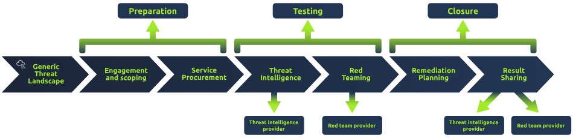

Red Team Threat Intel
Threat Intelligence (TI) or Cyber Threat Intelligence (CTI) is the information, or TTP (Tactics Techniques and Procedures), that is commonly used to help detection.
Cyber Threat Intelligence is consumed by collecting Indicators of Compromise and TTP’s distributed and maintained by ISAC (Information and Sharing Analysis Centers)
IOC’s are quantified by traces left by adversaries. These can include domains, IPs, files, strings etc.
The blue team can utilize varios IOCs to build detections and analyze behavior.
To aid in consuming CTIs and collecting TTP’s, red teams often use threat intelligence platforms and frameworks such as MITRE ATT&CK, TIBER-EU and OST Map.
The categorization of the collected TTP’s is done based on characteristics like:1. Threat Group
Kill Chain Phase
Tactic
Objective/Goal
TIBER-EU (Threat Intelligence-based Ethical Red Teaming) is a common framework developed by the Europian Central Bank that focuses on the usage of threat intelligence.

TTP Mapping
TTP Mapping is employed by the red cell to map adversaries’collected TTPs to a standard cyber kill chain.
To begin the process of mapping TTPs, an adversary must be selected as a target.
Adversaries can be chosen based on a few different criteria for an adversary to be chosen, those being:
Target Industry
Employed Attack Vectors
Country of Origin
Other Factors
Within the Mitre ATT&CK framework , we can see how an APT called “Carbanak” operated during a specific attack. There, we can see that they used valid compromised accounts to gain initial access into the system. They then held onto these accounts for persistence, and then escalated using Windows Services.
For defense Evasion, they masqueraded their malicious acts as a legitimate task/service, then disabled the compromised systems’ system firewalls. Lastly, they used a legitimate signed binary in the form of “Rundll32”.
In regards to C2 Activity, they deployed two tactics. One being RAT (Remote Access Tools), with bidirectional Actor-Victim communication.
CTI can also be used during engagement execution, emulating the adversary’s behavioral characteristics, such as:
C2 Traffic
These include User Agents, Ports and Protocols, and Listener Profiles
Malware and Tooling
These include IOCs and Behaviors
A red team can manipulate the traffic of C2 servers. CTI can be used to identify adversaries’ traffic and modify their traffic to emulate it. An example of this would be malleable profiles. These malleable profiles allow a red team operator to control multiple aspects of a C2 Listener’s traffic.
Information to be implemented in thiis profile can be gathered from ISACs and collected IOCs or packet captures, including:Host Headers
POST URIs
Server Responses and Headers
Another use of CTI would be analyzing behavior and actions of an adversaries’ malware and tools to develop your offensive tooling that behaves similarly.
An example would be to use a custom dropper. The red team can emulate the dropper by: